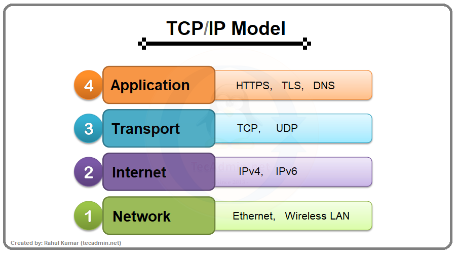

TCP/IP Protocol Suite
Category: Protocols & Communication
Definition
TCP/IP stands for Transmission Control Protocol / Internet Protocol. It is the conceptual model and set of communications protocols used on the Internet and similar computer networks.
How it Works: The Layers
TCP/IP breaks communication tasks into layers. Each layer has a specific job:
- Application Layer: Where protocols like HTTP (Web) and SMTP (Email) operate.
- Transport Layer (TCP): Ensures that data packets arrive accurately and in the right order.
- Internet Layer (IP): Responsible for sending packets across network boundaries (Routing).
- Network Interface Layer: Handles the physical connection to the network hardware.
The "History" Connection
TCP/IP was the breakthrough that transformed ARPANET into the modern Internet. By creating a universal standard, it allowed vastly different types of hardware—from giant servers to personal laptops—to "speak" to each other seamlessly.
Visualizing the Stack
